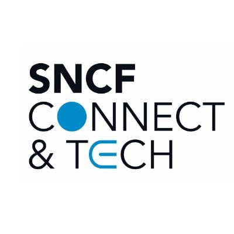
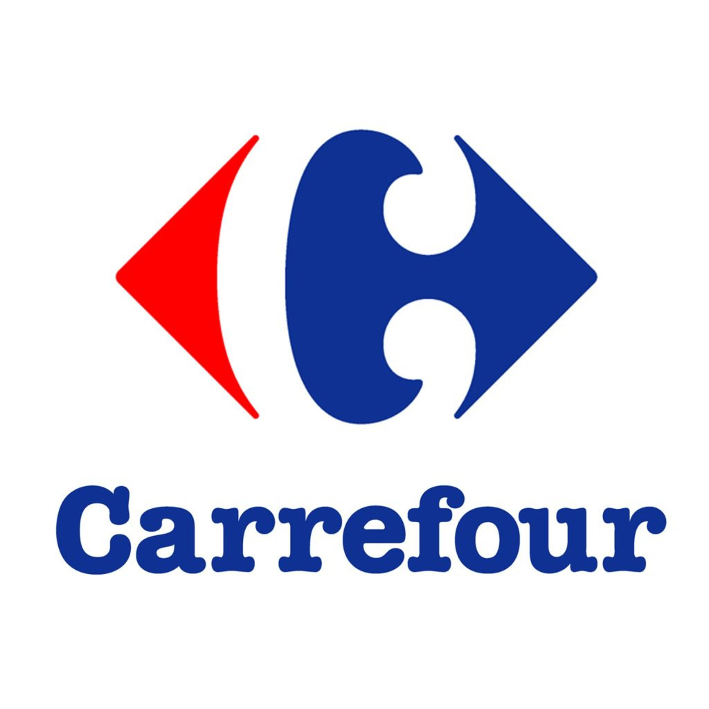

Domitille Bonnemain
Backend & Data apprentice
Paris, France
Hello, moi c'est Domitille, étudiante en développement logiciel à Ada tech school, passionnée par la science des données, l'optimisation des systèmes côté serveur (backend) et les défis stimulants du machine learning. Pour moi, ces domaines représentent bien plus que des aspects techniques ; ce sont des leviers puissants qui transforment notre manière d'appréhender l'information et de simplifier notre monde.
Cette page regroupe, mes projets de groupe, ainsi que la première version de mon projet personnel axé sur des sujets backend et data.
Premières immersions technique en startup et grand groupe.
Generative AI

Backend

Data